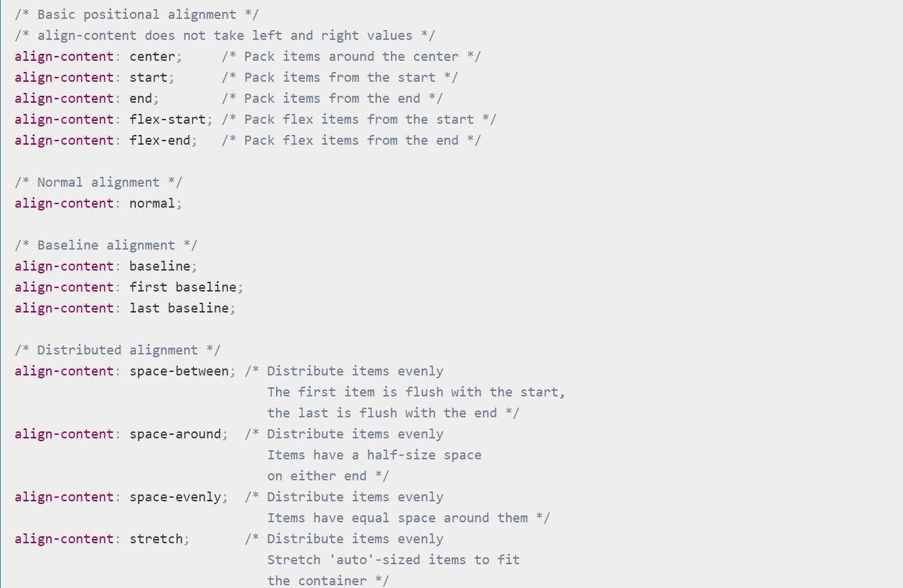

Flexbox is the commonly-used name for the CSS Flexible Box Layout Module, a layout model for displaying items in a single dimension — as a row or as a column. In the specification, Flexbox is described as a layout model for user interface design. The key feature of Flexbox is the fact that items in a flex layout can grow and shrink. Space can be assigned to the items themselves, or distributed between or around the items. Flexbox also enables alignment of items on the main or cross axis, thus providing a high level of control over the size and alignment of a group of items.
flex is a new value added to the CSS display property. Along with inline-flex it causes the element that it
applies to to become a flex container, and the element's children to each become a flex item. The items then participate in flex layout, and all of the properties defined in the CSS Flexible Box Layout Module may be applied.
The flex property is a shorthand for the flexbox properties flex-grow, flex-shrink and flex-basis.
In addition
- align-items
- order
- flex-shrink
- flex-grow
- flex-direction
- flex-basis
- align-content
- align-self
- flex
- flex-flow
- flex-wrap
- justify-content
A flexbox layout is defined using the flex or inline-flex values of the display property on the parent item. This element then becomes a flex container, and each one of its children becomes a flex item. A value of flex causes the element to become a block level flex container, and inline-flex an inline level flex container. These values create a flex formatting context for the element, which is similar to a block formatting context in that floats will not intrude into the container, and the margins on the container will not collapse with those of the items.
- align-content
- align-items
- flex
- flex-direction
- flex-flow
- flex-wrap
- justify-content
A CSS grid is defined using the grid value of the display property; you can define columns and rows on your grid using the grid-template-rows and grid-template-columns properties. The grid that you define using these properties is described as the explicit grid. If you place content outside of this explicit grid, or if you are relying on auto-placement and the grid algorithm needs to create additional row or column tracks to hold grid items, then extra tracks will be created in the implicit grid. The implicit grid is the grid created automatically due to content being added outside of the tracks defined. In the example below I have created an explicit grid of three columns and two rows. The third row on the grid is an implicit grid row track, formed due to their being more than the six items which fill the explicit tracks.


The CSS align-content property sets how the browser distributes space between and around content items along the cross-axis of a flexbox container, and the main-axis of a grid container.The interactive example below use Grid Layout to demonstrate some of the values of this property.

